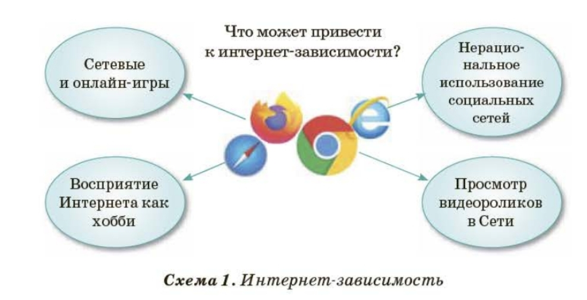

Урок информатики для 7-8 класса (Подготовлено для Сары)
В настоящее время интернет-зависимость является одной из самых серьезных проблем в мире. Сегодня одной из популярных занятий подростка в свободное время стали компьютерные игры и Интернет, который является замечательным средством общения и возможностью найти друзей в сети. Однако, есть много пользователей, которые бесконечно просматривают видеоролики в Интернете, находят нежелательную информацию и иногда просто не замечают, как проводят в сети слишком много времени.

У зависимого от Интернета человека меняются психология и поведение. Вот основные признаки:
Выполни все задания ниже, чтобы проверить свои знания!
1. Какое из перечисленного НЕ является признаком интернет-зависимости?
2. Ученые из какого города провели эксперимент «24 часа без Интернета»?
3. Утверждение: "Если школьник играет в онлайн-игры вместо выполнения домашнего задания, это может привести к снижению успеваемости."
4. Утверждение: "Чтобы избавиться от интернет-зависимости, нужно навсегда запретить себе пользоваться компьютером и телефоном."
Представь, что у твоего друга появились первые признаки интернет-зависимости. Какие действия помогут ему справиться с проблемой? (Выбери все подходящие варианты)